<div class="middle center"> <div style="width: 100%"> # 计算机视觉：无人驾驶汽车的前沿 <hr/> By [胥涵坤](https://xiu-zju.me) </div> </div> <!--s--> <div class="middle center"> <div style="width: 100%"> # Part.1 传感系统 视觉感知、环境理解和决策支持 </div> </div> <!--v--> ## 无人驾驶汽车的控制系统 在无人驾驶汽车的整个控制系统中，**传感系统**起到了十分重要的作用，因为它负责实时感知车辆周围的环境，包括道路状况、行人、其他车辆及障碍物等，为决策系统提供准确的数据支持，从而保障行车安全和驾驶效率。 <center> 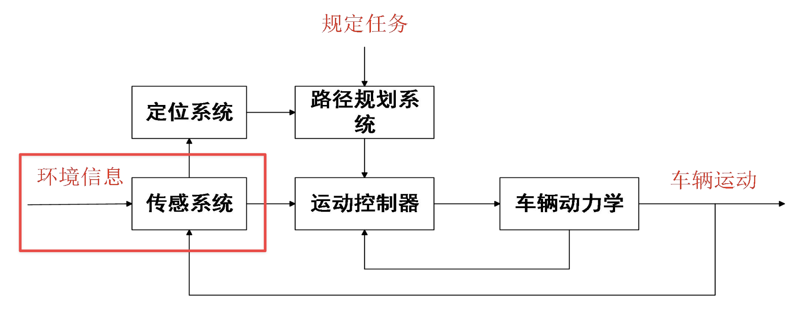 </center> <!--v--> ## 传感系统的作用 - 识别并躲避障碍物 - 从相机中识别行人 - 车道识别 - 交通标志识别 以下是车道检测和交通标志识别的示例图： <center> 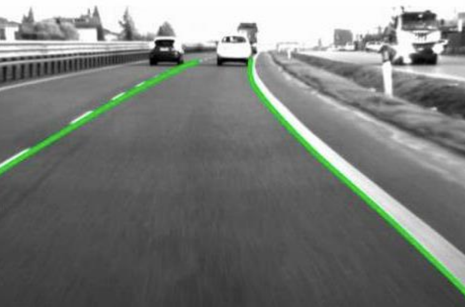 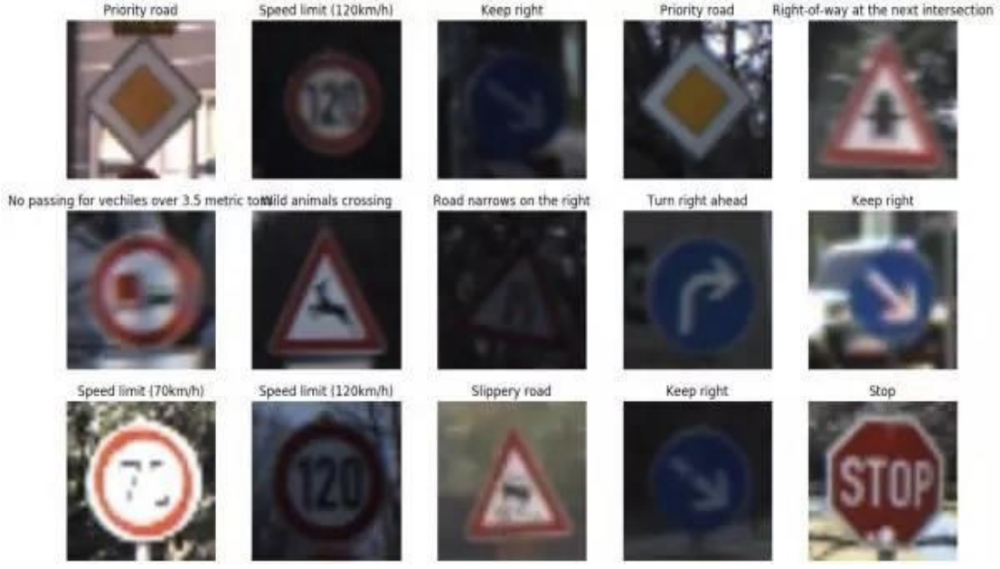 </center> <!--v--> ## 传感系统的实现 计算机视觉！ <center> 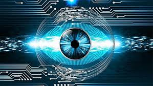 </center> 计算机视觉在自动驾驶汽车中主要用于视觉感知和环境理解。视觉感知包括对车辆、行人、道路标志、交通信号等目标的检测和识别，以及对车辆的速度、距离等属性的估计。环境理解包括对道路环境的分析和理解，以及对驾驶行为的决策支持。 <!--s--> <div class="middle center"> <div style="width: 100%"> # Part.2 计算机视觉 利用计算机视觉来实现传感系统 </div> </div> <!--v--> ## 概览 [计算机视觉](https://zh.wikipedia.org/wiki/%E8%AE%A1%E7%AE%97%E6%9C%BA%E8%A7%86%E8%A7%89)是一门研究如何使机器“看”的科学，更进一步的说，就是指用摄影机和计算机代替人眼对目标进行识别、跟踪和测量等机器视觉，并进一步做图像处理，用计算机处理成为更适合人眼观察或传送给仪器检测的图像。 那么，计算机视觉具体该怎么运用于无人驾驶汽车的传感工作呢？主要工作分为以下2个部分： 1. 图像处理 2. 目标检测与对象识别 <!--v--> ## 使用工具 语言选择：Python <center> <img src="./python.png" alt="示例图片" width="150"> </center> 库选择：OpenCV <center> </center> <!--s--> <div class="middle center"> <div style="width: 100%"> # 第一步：图像处理 包括灰度转换、滤波、边缘检测、形状识别等 </div> </div> <!--v--> ## 灰度转换 灰度变换是指根据某种目标条件按一定变换关系逐点改变源图像中每个像素灰度值的方法。目的是为了改善画质，使图像显示效果更加清晰。 彩色图像转为灰度图像的常用方法是通过加权平均法，也称为Y'CbCr颜色空间转换。这是因为人眼对绿色敏感度最高，对红色次之，对蓝色最不敏感。对此，我们有如下公式： $$Gray(x,y)=0.299R(x,y)+0.587G(x,y)+0.114B(x,y)$$ <center> 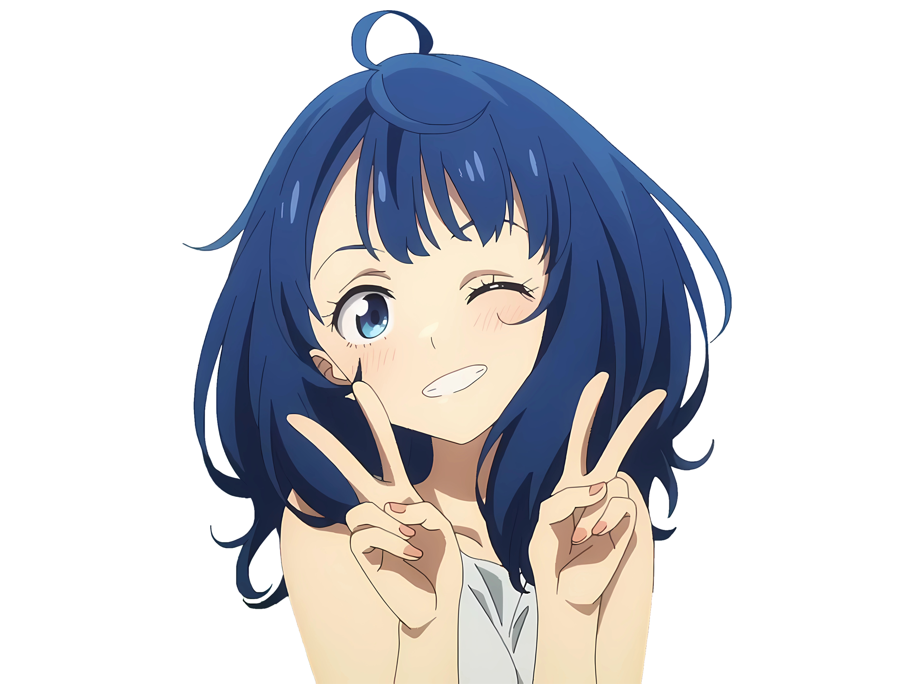 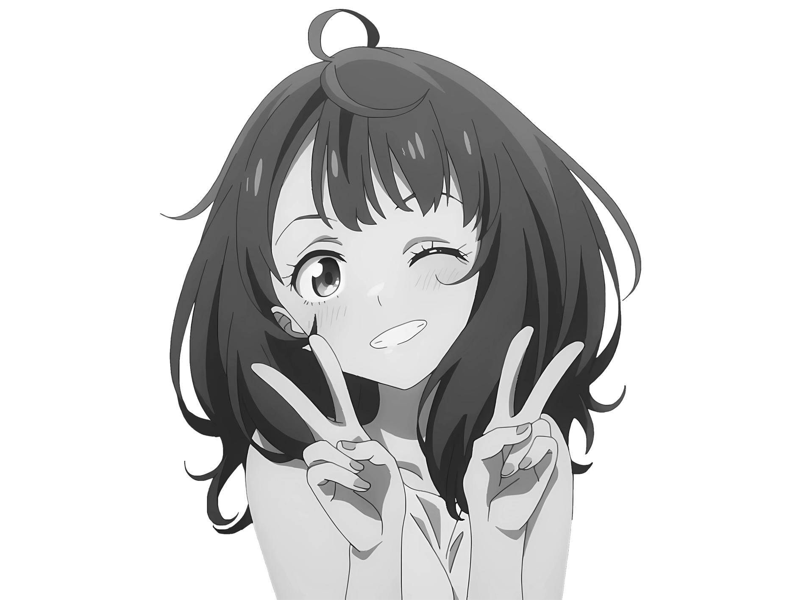 </center> <!--v--> ## 灰度转换实现代码 ```python import cv2 from PIL import Image #读取彩色图像 color_img = cv2.imread(r'./lao8.png') #在窗口中显示图像，该窗口和图像的原始大小自适应 cv2.imshow('original image',color_img) #cvtColor的第一个参数是处理的图像，第二个是RGB2GRAY gray_img=cv2.cvtColor(color_img,cv2.COLOR_RGB2GRAY) #gray_img此时还是二维矩阵表示,所以要实现array到image的转换 gray=Image.fromarray(gray_img) gray.save('gray.jpg') cv2.imshow('Gray Image',gray_img) cv2.waitKey(0) ``` <!--v--> ## 滤波 由于成像系统、传输介质和记录设备等的不完善，数字图像在其形成、传输记录过程中往往会受到多种噪声的污染。[滤波](https://baike.baidu.com/item/%E6%BB%A4%E6%B3%A2/2938301)是用于减少图像噪声的技术，常用的滤波方法包括平均滤波、中值滤波、高斯滤波等。 滤波操作的要求: 1. 不能损坏图像轮廓及边缘 2. 图像视觉效果应当更好 <center> 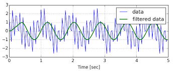 </center> <!--v--> ## 平均滤波 平均值滤波算法是比较常用，也比较简单的滤波算法。在滤波时，将N个周期的采样值计算平均值。当N取值较大时，滤波后的信号比较平滑，但是灵敏度差；相反N取值较小时，滤波平滑效果差，但灵敏度好。 - 优点：算法简单，对周期性干扰有良好的抑制作用，平滑度高，适用于高频振动的系统。 - 缺点：对异常信号的抑制作用差，无法消除脉冲干扰的影响。 $$f_{avg}(x, y) = \frac{1}{9} \sum_{i=-1}^1 \sum_{j=-1}^1 f(x+i, y+i)$$ <!--v--> ## 中值滤波 中值滤波是将图像窗口内像素值按值排序后选择中间值作为目标像素值的方法。对于一个3x3的窗口，中值滤波可以通过以下步骤实现： - 对窗口内像素值排序，得到排序后的像素值序列 - 选择序列中的中间值作为目标像素值：$f_{median}(x,y)$ <center> 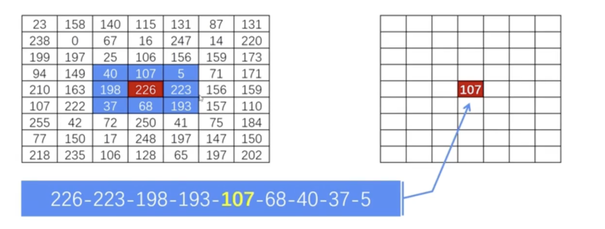 </center> <!--v--> ## 边缘检测 边缘检测是用于识别图像中锐边斜角的技术，常用的边缘检测算法包括罗尔边缘检测、艾伯尔边缘检测、卡尔曼滤波器等。 此处仅展示用法，原理不过多细究。 <center> 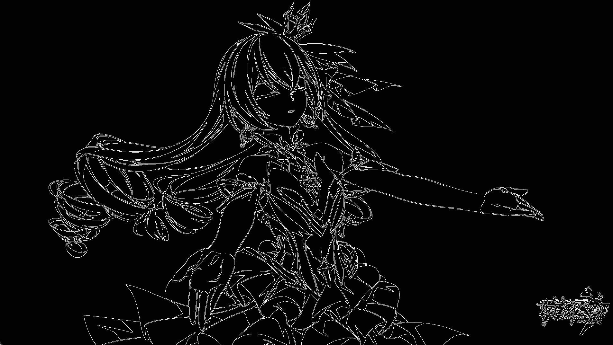 </center> <!--v--> ## 边缘检测方法 - 罗尔边缘检测： 基于图像的梯度和拉普拉斯操作符的差分来检测边缘的方法。 $$ L(x, y) = |\nabla f(x, y)| =$$ $$\sqrt{(f(x+1, y) - f(x-1, y))^2 + (f(x, y+1) - f(x, y-1))^2} $$ - 艾伯尔边缘检测： 是基于图像的梯度和拉普拉斯操作符的差分来检测边缘的方法，与罗尔边缘检测的区别在于使用了平滑操作。 $$ A(x, y) = |\nabla f(x, y)| − k \times \Delta f(x,y)$$ ~~现实中直接用就行了，没必要弄清原理（逃~~ <!--v--> ## 代码实现 ```python import cv2 import numpy as np # 读取并转换为灰度图像 image = cv2.imread('./7.png') gray = cv2.cvtColor(image, cv2.COLOR_BGR2GRAY) # 应用中值滤波 median_filtered = cv2.medianBlur(gray, 5) # 应用Canny边缘检测 canny_edges = cv2.Canny(gray, 50, 150) # 绘制边缘检测结果 cv2.imshow('Canny Edges', canny_edges) # 等待用户按任意键继续 cv2.waitKey(0) ``` <!--s--> <div class="middle center"> <div style="width: 100%"> # 第二步：目标检测 包括R-CNN、Fast R-CNN、Faster R-CNN等 </div> </div> <!--v--> ## 意义 第一步的图像检测中，我们已经让机器得到了一个相对易识别的图像，接下来我们要让机器知道给它的图像是什么。目标检测就是在一幅图片中找到目标物体，给出目标的类别和位置，如下图所示： <center> 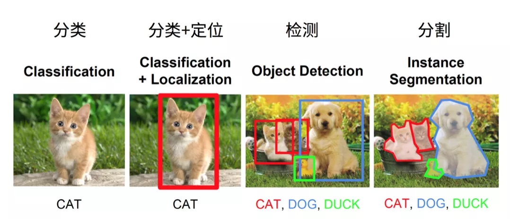 </center> <!--v--> ## 检测方法 目标检测方法分为**One-Stage**（一步检测算法）和**Two-Stage**（两步检测算法）两种。 - 两步检测算法是把整个检测过程分为两个步骤，第一步提取一些可能包含目标的候选框，第二步再从这些候选框中找出具体的目标并微调候选框。 - 一步检测算法则是省略了这个过程，直接在原始图片中预测每个目标的类别和位置。 两步检测最经典的就是Faster-RCNN三部曲。 1. R-CNN 2. Fast R-CNN 3. Faster R-CNN <!--v--> ## R-CNN R-CNN是Region-based Convolutional Neural Networks的缩写，是一种基于区域的卷积神经网络检测方法。R-CNN的主要步骤包括： - 使用Selective Search算法生成候选的目标区域。 - 将生成的候选区域作为输入，使用卷积神经网络进行特征提取。 - 使用支持向量机分类器（SVM）对提取出的特征进行分类和回归，得到目标的类别和边界框坐标。 <center> 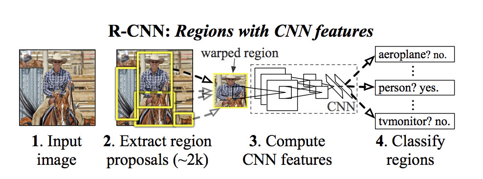 </center> <!--v--> ## Fast R-CNN Fast R-CNN是一种改进的R-CNN方法，通过将候选区域生成和特征提取过程合并，提高检测速度。Fast R-CNN的主要步骤包括： - 使用卷积神经网络对输入图像进行特征提取。 - 使用卷积神经网络的卷积层和池化层的输出作为候选区域的生成。 - 使用支持向量机（SVM）分类器对提取出的特征进行分类和回归，得到目标的类别和边界框坐标。 <center> 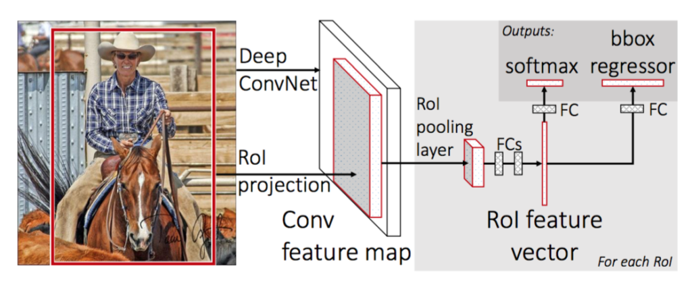 </center> <!--v--> ## Faster R-CNN Faster R-CNN是一种进一步改进的R-CNN方法，通过引入Region Proposal Network（RPN）来自动生成候选区域，进一步提高检测速度。Faster R-CNN的主要步骤包括： - 使用卷积神经网络对输入图像进行特征提取。 - 使用Region Proposal Network（RPN）自动生成候选区域。 - 使用卷积神经网络对生成的候选区域进行特征提取。 - 使用支持向量机（SVM）分类器对提取出的特征进行分类和回归，得到目标的类别和边界框坐标。 <center> 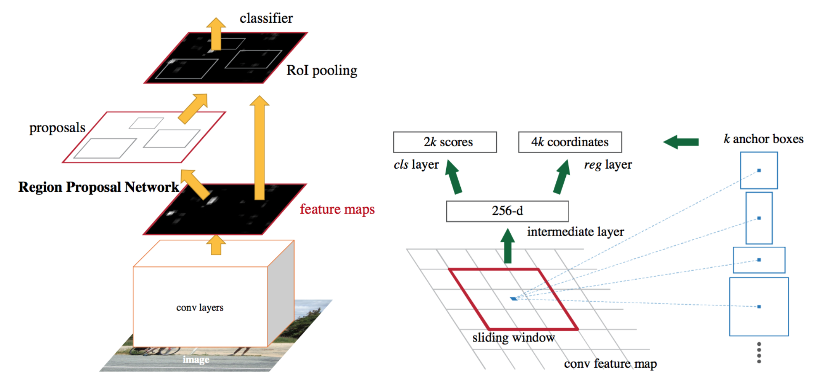 </center> <!--v--> ## 实现效果 将上述得到的结果进行分割，我们可以得到以下结果： <center> 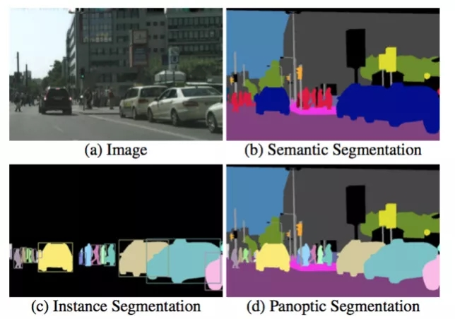 </center> <!--s--> <div class="middle center"> <div style="width: 100%"> # 实现效果 十分粗略地试了一下...... </div> </div> <!--v--> ## 简单程序 我试着使用opencv和预训练的模型实现了一个简单的人脸检测程序。无人驾驶车辆的检测模型应该是同理的，但是会复杂许多。 <center> 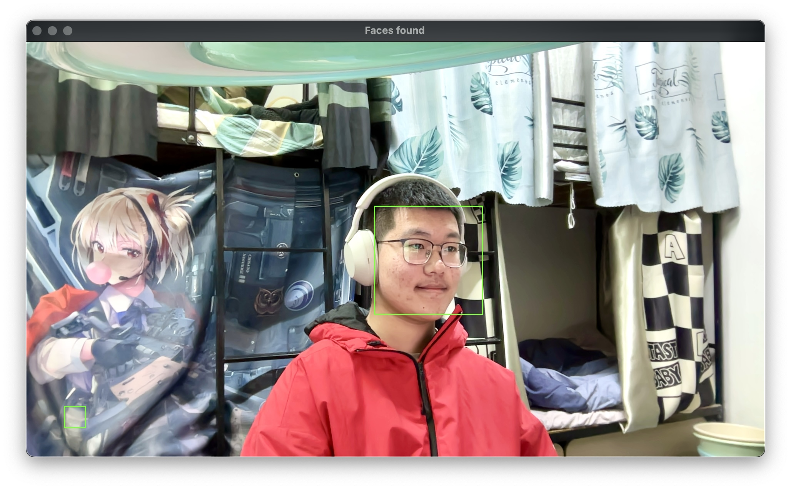 </center> <!--v--> ## 代码实现 ```python import cv2 import os # 加载预训练的人脸级联分类器 cascade_path = os.path.join('.../haarcascade_frontalface_default.xml') if not os.path.exists(cascade_path): print(f"Error: {cascade_path} not found.") exit() face_cascade = cv2.CascadeClassifier(cascade_path) # 打开摄像头 cap = cv2.VideoCapture(0) if not cap.isOpened(): print("Error: Could not open video capture.") exit() ``` <!--v--> ```python while True: # 读取一帧 ret, frame = cap.read() if not ret: print("Error: Failed to capture image.") break gray = cv2.cvtColor(frame, cv2.COLOR_BGR2GRAY) # 使用级联分类器检测人脸 faces = face_cascade.detectMultiScale(gray, scaleFactor=1.1, minNeighbors=5, minSize=(30, 30)) # 为每个检测到的人脸绘制一个矩形 for (x, y, w, h) in faces: cv2.rectangle(frame, (x, y), (x+w, y+h), (0, 255, 0), 2) # 显示结果 cv2.imshow('Faces found', frame) # 按'q'退出循环 if cv2.waitKey(1) & 0xFF == ord('q'): break # 释放摄像头, 关闭所有窗口 cap.release() cv2.destroyAllWindows() ``` <!--s--> <div class="middle center"> <div style="width: 100%"> # 谢谢大家！ <hr/> By [胥涵坤](https://xiu-zju.me) <span style="background: linear-gradient(to right, orange, yellow, green); -webkit-background-clip: text; color: transparent; font-size: 34px; font-weight: bold;"> Any Questions? </span> </div> </div>